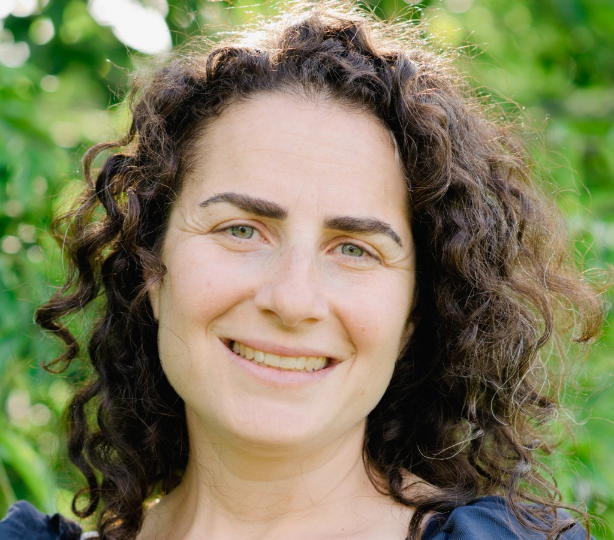

About

I am a registered social worker based in Ottawa. I have over 25 years of experience in health and social service settings supporting individuals through grief, bereavement, serious illness, caregiving, and end-of-life and palliative care concerns.
I hold a Masters of Social Work from Carleton University and a certificate in Death, Dying and Bereavement from Wilfrid Laurier University. I currently work as a family support counsellor with Hospice Care Ottawa.
For clients seeking counselling, I offer emotional support and a space to process experiences, explore complex feelings, and make sense of grief, illness, and loss at your own pace.
I also offer practical guidance in navigating complex healthcare and social support systems in Ottawa, including palliative care services.
My therapeutic approach is client-centred and relational, grounded in the understanding that grief does not follow a set path. Counselling offers a space to reflect, make meaning, and feel supported while moving through loss in your own way and at your own pace.